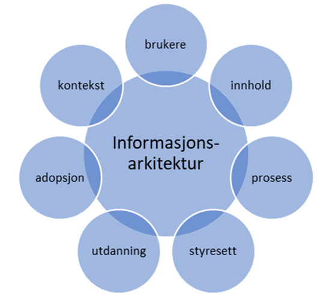
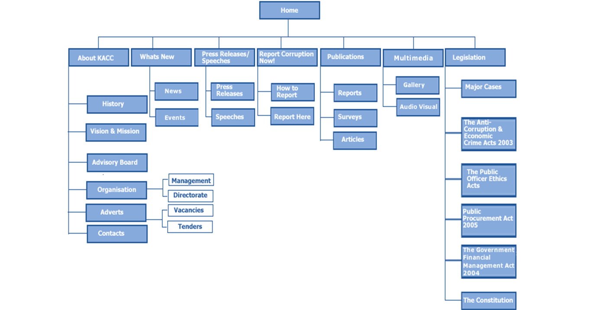

Design Thinking 2: Utforske
I denne fasen begynner vi å se på løsninger. Fasen defineres som punktet hvor "the designer commences creating possible solutions without examining their practicality until a large number of solutions has been proposed. Once this is done, impractical solutions are eliminated or played with until they become practical." Her skal vi begynne å teste ut forskjellige løsningsforslag før vi setter i gang med å utvikle de beste forslagene til fungerende prototyper. I denne fasen av Design Thinking jobber vi med informasjonsarkitektur (navigasjon og struktur), grafisk design (skisser og wireframes) og universell utforming. Vi må også kjenne til de grunnleggende prinsippene GDPR, og hva systemutviklere spesielt bør ha fokus på i forhold til personopplysninger.
Informasjonsarkitektur (IA)
IA er å skissere løsningen på nettsiden som et skjelett. Hvor skal de ulike delene være? IA betyr å organisere informasjon til taksonomier. Dette betyr å kategorisere basert på ulike felt som igjen blir sortert i grupper. Det handler om design/layout, tekniske krav og en plan for universell utforming (UU). I startfasen på IA må man ta brukere, innhold, prosess, styresett, utdanning, adopsjon og kontekst med i vurderingen.
Jobben til en IA, er å gjøre jobben til personer lettere. Dette kan være alt fra hvordan oppsettet gjør det lett for brukeren å finne frem, til hvordan brukeren interagerer med systemet. I arbeidet med å utvikle sin egen arkitektur kan man være innom konseptmodellen og strukturmodellen. I konseptmodellen handler om tilstander man er i. Vist under her er prosess , fysisk eller sosial ting , uttalelse og gjentagende mønster. Her vises et utdanningssystem og hvordan brukeren oppfatter systemet.
Universell Utforming (UU)
Med universell utforming menes tilrettelegging eller utforming av produkter, tjenester og omgivelser, slik at de skal kunne brukes av så mange mennesker som mulig. Dette for å motvirke diskriminering på grunn av nedsatt funksjonsevne, i tillegg til å oppnå like muligheter til samfunnsdeltagelse. Dette er lovpålagt for alle nettsteder, og det er derfor viktig å tenke på universell utforming tidlig i et webprosjekt. "Med universell utforming menes utforming eller tilrettelegging av hovedløsningen i de fysiske forholdene, herunder informasjons- og kommunikasjonsteknologi (IKT), slik at virksomhetens alminnelige funksjon kan benyttes av flest mulig."(Difi, 2019).
Forskriften om universell utforming av IKT-løsninger ble vedtatt i Norge i 2013, og baserer seg på WCAG 2.0-standarden. WCAG 2.0 er bygd opp av 4 prinsipper som understøttes av 61 testbare suksesskriterier, og forskriften om universell utforming sier at nettsider må oppfylle minst 35 av 61 kriterier i den tekniske standarden. I Norge er det Difi som håndhever og holder tilsyn med denne forskriften.
GDPR
Personvernforordningen er en lov EU har vedtatt (den blir også kalt GDPR som står for General Data Protection Regulation). Loven skal gjelde for alle EU-og EØS-landene. I Norge er det med virkning fra 20.juli 2018 vedtatt en ny lov om personopplysninger. Hva er nytt? Personopplysninger skal kun behandles der det finnes et tydelig spesifisert formål. Nye rettigheter for borgerne er at de kan motsette seg profilering begått av offentlige myndigheter og motsette seg profilering for direkte markedsføring. Bedrifter får også et større ansvar for personvern. De får utvidet sin plikt til å selv vurdere personvernkonsekvenser (DPIA) ved behandling av personopplysninger. Personvernet til de som er registrert i løsningen skal ivaretas. Artikkel 35 definerer når det er påkrevd å gjøre en DPIA, hva den skal inneholde og hvem som skal gjennomføre den. Link til artikkel 5 i GDPR nå kalt Lov om behandling av personopplysninger kapittel 2 (personopplysningsloven) i Lovdata
Wireframes
En mellomting mellom grovskisse og photoshoppet design. Wireframes skal inneholde: - Plassering av elementer - Interaksjon (skjema, vise hva som er klikkbart mm. - Tekst (headingnivå, paragraf, font, strl)
Hvorfor wireframes?
Muligjør testing av siden (formål, hva er klikkbart, hva er det viktigste elementet på siden) Kostnadseffektivt (lettere å endre skisser enn koder) Visualisere arbeidsflyt på nettstedet